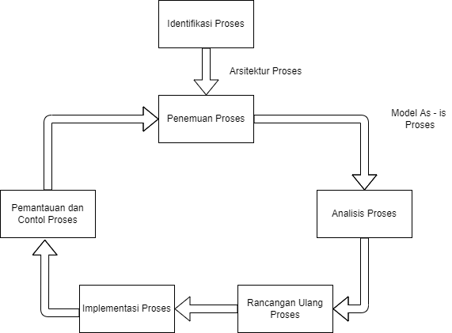
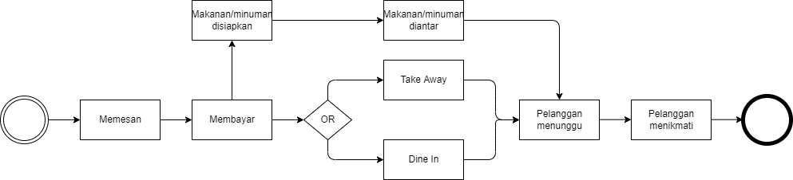

Rohadatul Aisy
Mahasiswa Program Studi Sistem informasi
Universitas Ahmad Dahlan
UJIAN TENGAH SEMESTER - ANALISIS PROSES BISNIS
Soal dan jawaban
- Pertanyaan terkait dengan pemahaman Analisis Proses Bisnis:
- Sebutkan dan Jelaskan manfaat melakukan analisis Proses Bisnis bagi Organisasi
- Jawab :
- Manfaat melakukan analisis proses bisnis pada sebuah organisasi yaitu masalah yang terkait dengan proses as-is di identifikasi, didokumentasi dan diukur menggunakan ukuran kinerja, sehingga terbentuklah kumpulan isu-isu terstruktur. Kemudian isu-isu ini diprioritaskan dari segi dampaknya dan juga diperhitungkan usaha yang diperlukan untuk mengatasinya. Oleh karen itu sangat bermanfaat untuk menjaga (maintenance) juga bahkan meningkatkan (development) kualitas dari organisasi itu sendiri.
- Manajemen proses di suatu sisi memungkinkan perusahaan untuk merespons perubahan yang cepat dengan lebih baik. Organisasi atau perusahaan konvensional sering kali sulit memahami dan mengenali perubahan perubahan sebelum dilakukannya tahap evaluasi kinerja finansial. Dengan keterlambatan dalam mengenali perubahan yang terjadi maka organisasi atau perusahaan sulit membuat mekanisme yang akan digunakan dalam merespon perubahan tersebut. Maka dari itu adanya manajemen proses maka perubahan perubahan yang terjai dapat di respon dengan baik berdasarkan matrik matrik kinerja operasional yang di catat dalam manajemen kinerja proses.
- Manajemen proses juga menjadi payung untuk berbagai inisiatif peningkatan kinerja, mulai dari globalisasi dan integrase merger sampai implementasi ERP dan e-business. Apabila dalam suatu organisasi atau perusahaan inisiatifnya dilakukan secara independent maka ada kemungkinan akan terjadi perubahan yang tidak terkoordinasi dikhawatirkan akan saling bertentangan. Maka dari itu ada analisis proses yang dapat di gunakan sebagai alat agar koordinasi sebuah organisasi atau perusahaan dapat lebih terstruktur dan sesuai dengan apa yang ditentukan.
- Jelaskan tahapan pada siklus hidup BPM
- Jawab :
- Menurut Dumas et al siklus hidup BPM ditunjukkan pada diagram berikut 
- Identifikasi Proses
Pada fase awal, suatu masalah bisnis diajukan kemudian proses yang relevan dengan masalah yang ditangani diidentifikasi, dibatasi, dan dikaitkan satu sama lainnya. Hasil identifikasi proses adalah (architecture process) baru atau yang diperbarui yang memberikan keseluruhan pandangan proses dalam sebuah organisasi dan hubungan mereka. - Penemuan Proses
Fase ini didefinisikan sebagai tindakan pengumpulan informasi mengenai proses yang ada saat ini dan mengorganisasikannya dalam bentuk model proses as-is. Penekanannya ada pada pengumpulan dan organisasi informasi dan bukan sekadar latihan pemodelan kemudian hanya dapat dilakukan setelah informasi dikumpulkan. - Analisis proses
Pada tahap ini, masalah yang terkait dengan proses as-is diidentifikasi, didokumentasikan, dan bila memungkinkan, diukur menggunakan ukuran kinerja. Output dari fase ini adalah kumpulan isu terstruktur. isu-isu ini biasanya diprioritaskan dari sisi dampaknya dan terkadang juga diperhitungkan usaha yang diperlukan untuk mengatasinya. - Perancangan Ulang Proses
Fase ini juga disebut fase perbaikan proses. Tujuan dari tahap ini adalah untuk mengidentifikasi perubahan pada proses yang akan membantu mengatasi masalah yang diidentifikasi pada fase sebelumnya dan memungkinkan organisasi memenuhi tujuan kerjanya. Untuk mencapai tujuan ini, beberapa opsi perubahan dianalisis dan dibandingkan dalam hal ukuran kinerja yang dipilih. - Implementasi Proses
Pada tahap ini, perubahan yang diperlukan untuk berpindah dari proses as-is ke proses to-be dipersiapkan dan dilakukan implementasi proses mencakup dua aspek yaitu manajemen perubahan organisasi dan otomasi proses. Manajemen perubahan organisasi mengacu pada serangkaian kegiatan yang diperlukan untuk mengubah cara kerja semua peserta yang terlibat dalam proses tersebut. Otomasi proses di sisi lain mengacu pada pengembangan dan penerapan sistem TI (atau versi sistem yang TI ada) yang mendukung proses to-be. - Pemantauan dan Kontrol Proses
Yaitu mengumpulkan dan menganalisis data yang relevan untuk menentukan seberapa baik proses yang dilakukan sehubungan dengan ukuran kinerja dan sasaran kinerjanya. Kemudian mengidentifikasi kemacetan kesalahan berulang atau penyimpanan sehubungan dengan perilaku yang diinginkan. Identifikasi itu baru yang timbul dalam proses yang sama atau dalam proses lainnya untuk siklus perbaikan selanjutnya.
- Gambarkan Proses Bisnis yang berjalan saat ini pada studi Kasus Anda !
- Jawab :
Dalam studi kasus di mata kuliah analsiis proses bisnis, saya memilih Kafe Nilu Kopi sebagai subjek observasi. Pada Kafe Nilu Kopi terdapat proses bisnis yang utama yaitu menjual makanan dan minuman. Sedangkan proses bisnis yang mendukung yaitu membuat makanan dan minuman itu sendiri. 
Proses bisnis diawali dengan pelanggan mengantri, kemudian pelanggan dapat memilih menu yang terdapat pada tembok atas atau dapat melihat di buku menu yang telah disediakan di meja samping. Setelah pelanggan menentukan menu, pelanggan dapat memesan langsung ke kasir. Dilanjutkan dengan membayar sesuai dengan total pembelian.
Kemudian pada bagian kasir akan tercatat menu yang dipesan, seorang waiters atau server akan menyampaikan menu tersebut ke bagian bar atau kitchen lalu makanan atau minuman akan dibuat.
Kembali ke pelanggan, apabila pelanggan ingin membawa pulang (take away) makanan atau minuman yang dipesan maka harus menunggu terlebih dahulu agar pesanan disiapkan kemudian bisa langsung pulang. Namun jika pelanggan memilih untuk dimakan di tempat (dine in), setelah pembayaran pelanggan dapat memilih meja lalu pesanan akan diantar oleh waiters/server langsung ke meja. Sehingga peanggan dapat langsung menikmatinya. - Lakukan analisis pada permasalah yang terjadi pada proses bisnis studi kasus Anda menggunakan tabel di bawah ini :
- Jawab :
| No. | Aktivitas | Aktor | Permasalahan | Akibat |
|---|---|---|---|---|
| 1 | Memesan | Kasir, Pelanggan | Tidak mengecek ulang pesanan (cross check) yang mungkin terjadi misheard. | Tidak sesuai menu yang dipesan. |
| 2 | Membayar | Kasir, Pelanggan | Ada beberapa pembayaran menggunakan e-wallet yang tidak tersedia | Terpaksa menggunakan uang tunai |
| 3 | Membuat makanan/minuman | Barista, Chef | Tidak ada | Rasa itu relatif |
| 4 | Mengantar makanan/minuman | Waiters/server | Tidak selalu mendapatkan nomor meja | Beresiko terjadi kesalahan dalam mengantar pesanan |
| 5 | Pelanggan menikmati makanan/minuman | Pelanggan | stop contact terbatas | Pelanggan khususnya mahasiswa tidak bisa berlama-lama |